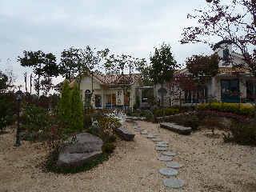
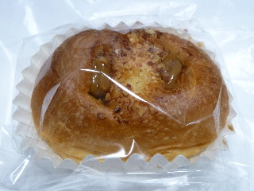
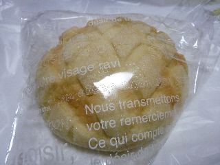

三次にお洒落な建物のパン屋さんがありました。
2011/10/30
三次市にお洒落な建物のパン屋さんがありました。

右がレストランで、左がパン屋さんです。行った時レストランは営業していませんでした。

これはキャラメルデニッシュです。
表面が少しデニッシュパンっぽいつくりになっていました。
パンの上にキャラメルクリームが見えますが、中にも甘いクリームが入っていました。

メロンパンはキメが細かくて、少し重量感がありました。
ドライブの途中に、寄り道してお買いものするのにいい感じだなって思いました。
ページトップへ